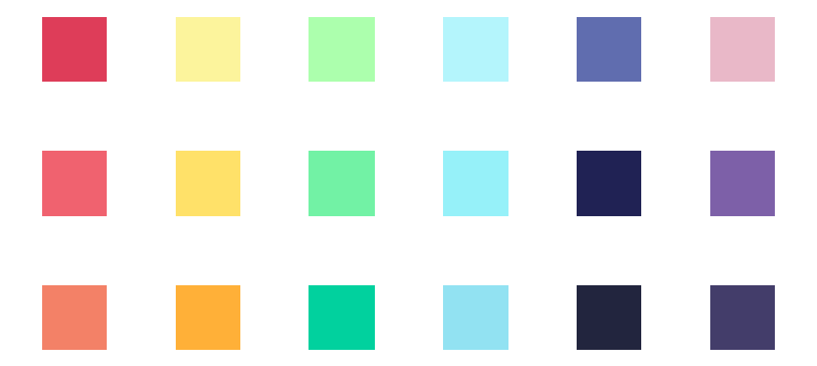

Background
The Peak SFU, a weekly newspaper created by students at Simon Fraser University, asked me to illustrate the cover for their next serious issue, Communities of Care.
This is a well-written piece by one of the founders of the no cops on campus initiative. It’s found support among SFU Students of Caribbean and African Ancestry (SOCA), SFU First Nations Student Association (FNMISA), and a few other equity groups. Among other topics, it mentions that this does not point to a police-free future, but rather one in which communities support one another through mutual aid and support tactics, rather than surveillance and control.
Considerations
- Focus on diversity and inclusivity when illustrating people
- Don't use explicit images of cops and police violence, as it may be triggering and sensitive to those viewing it
Illustration Concept
- A representative community of people in a display of support in an outdoor setting
- Inclusion of BIPOC (Black, Indigenous, and people of color), gender, 2SLGBTQIA+, and body sizes
- Opted for Kurzgesagt-esque flat illustration style and wide range of colors for a more playful look to contrast the seriousness of the written piece
Colour Palette
Sketches
Feedback I received from the first iteration is that there is no person who was representing the Indigenous community. Another piece of feedback I received is that it would be better to represent a character with black natural hair (curly/afro), since the piece talks about black and brown people.
Drawing the Indigenous character was definitely a challenge for me, as it was a community I am not a part of, so there was a lot of unfamiliarity. This made me realize that I needed to learn more about this community and their culture before attempting to draw them as I wanted to avoid amalgamating all the Indigenous nations. A source I did my research on was Indigenous Peoples of Atlas Canada, which provided examples on Inuit clothing as well as the background behind it.
Upon receiving this feedback, I thought about other ways to make other characters other than those two mentioned better represent a community they are in, and create more diversity and inclusion within my illustration. I came to the decision to add a character with a hijab, which are head coverings for Muslim women, and a character wearing a qipao, a Chinese dress worn by women. I also illustrated one of the characters to be gender ambiguous, as a way to represent the non-binary community.
Final Illustrations

Reflection
Illustrating a cover for this topic has made me reflect on this topic more and made me realize that there are lots of things I still do not know, but there is still room for learning and getting to know different cultures and communities around me. It was an enlightening experience and I am grateful that The Peak SFU has reached out to me to create this cover. I would say that this is one of my favourite illustration pieces I have done as it allowed me to step further into illustrating more diverse characters and inclusion, which is extremely important nowadays.
More Related Projects
Illustration, Internship
UBC CPD Illustration Gallery
A series of illustrations I have created during my Spring 2022 internship with UBC CPD, for their eLearning website.
VIEW UBC CPD
Illustration, Graphic Design
Playground
A series of non-academic/freelance illustrations and graphic design that I have done on the side
VIEW PLAYGROUND